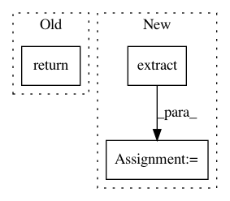

8b5b7fa83d0a79860a8fe93206ea32121e63a81e,torch/fx/proxy.py,TracerBase,create_proxy,#TracerBase#Any#Any#Any#Any#Any#Any#,28
Before Change
kwargs_ = self.create_arg(kwargs)
assert isinstance(args_, tuple)
assert isinstance(kwargs_, dict)
return self.proxy(self.create_node(kind, target, args_, kwargs_, name, type_expr))
def create_arg(self, a: Any) -> Argument:
A method that lowers the objects seen as arguments during symbolic evaluation
After Change
user_frame = self.find_user_frame()
if user_frame:
walk_stack_gen = traceback.walk_stack(user_frame)
summary = traceback.StackSummary.extract(walk_stack_gen) // type: ignore
tb_lines = summary.format()
proxy.node.stack_trace = "".join(tb_lines)
return proxy
In pattern: SUPERPATTERN
Frequency: 3
Non-data size: 3
Instances
Project Name: pytorch/pytorch
Commit Name: 8b5b7fa83d0a79860a8fe93206ea32121e63a81e
Time: 2021-03-03
Author: jamesreed@fb.com
File Name: torch/fx/proxy.py
Class Name: TracerBase
Method Name: create_proxy
Project Name: J535D165/recordlinkage
Commit Name: 4a24e4e36ee175aef54b92eb03e08a2be7811a96
Time: 2018-03-10
Author: jonathandebruinhome@gmail.com
File Name: recordlinkage/datasets/febrl.py
Class Name:
Method Name: _febrl_links
Project Name: austin-taylor/flare
Commit Name: 9cc8397cee3dcc24d1697cb45378eddc660cc8e1
Time: 2019-10-21
Author: jdpberba@gmail.com
File Name: flare/data_science/features.py
Class Name:
Method Name: domain_tld_extract